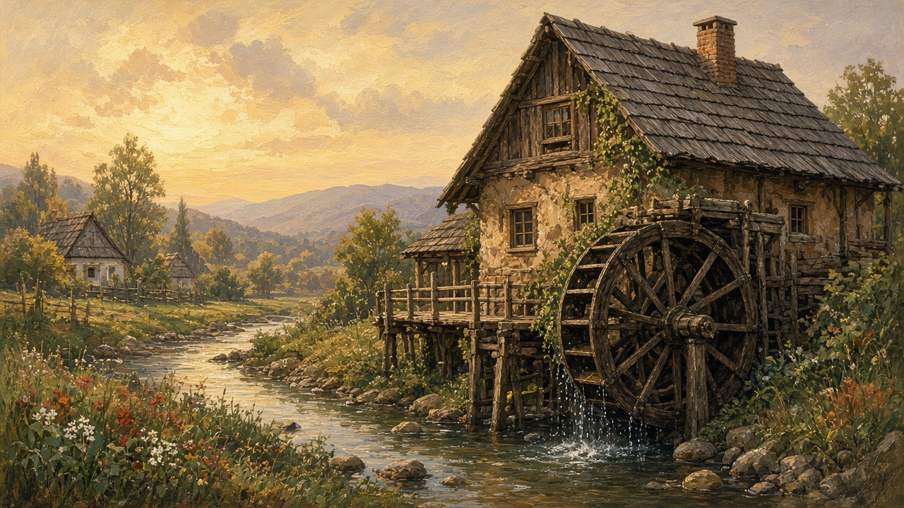

The mill
Moară. Not a postcard wheel. The building on the creek where a household’s grain became făină, and the man who kept the stones turning.

On the stream
A moară de apă sits where a pârâu has enough fall to turn a wheel. Not the famous river. The creek at the edge of the sat, a race cut beside it, a wooden wheel that groaned when the sluice opened. The same water habit as rivers — the creek with no fame that still did a job. You heard it before you saw it: water, then wood, then stone. Some plains had a windmill; later a motor in a shed. What people still mean by the village mill is this wet one, down from the last gate, mud on the path after rain.
The morar
The miller is the morar. He lived by the water more than by the church. You paid him in a share of the flour, not always in coin — enough from the sack that the old joke was he never went hungry. He knew whose grain was damp and whose was clean. He kept the stones cutting, the wheel clear of ice in a hard winter, the race from silting. People trusted him and watched him. A mill was a place you waited, so it was also a place you heard news. The village road ran past the church and the well; the mill sat a little off it, and still everyone knew the way.
Stone and dust
Piatră de moară: two stones, one turning on the other. Wheat or maize went in at the hopper and came out as făină, warm from the grind. The air was white. It settled on beams, on the morar’s shirt, on your eyebrows if you stood too close. The sound was not a song. It was a low, steady bite, hour after hour, that you felt in the floor. When the creek ran thin in August, or locked in ice, the mill went quiet and the village waited, or went farther. You could tell from the road whether the stones were working that day.
Grain in, făină home
After harvest, sacks of grâu, or porumb dried on the porch, went down to the mill on a cart, a barrow, a horse, later a car with the trunk tied shut. You waited your turn. You watched your sack because mixing was the old fear. You took home făină in the same cloth, a little less after the miller’s share, and that is what the cuptor asked for. The loaf that came from it is on bread. Mălai for mămăligă took the same trip. A household that still says “am fost la moară” is naming an errand, not a museum visit.
What stayed
Most of those wheels have stopped. A ruin in the willows, a padlocked shed, a mill restored for Sunday visitors with a painted sluice. Shop flour and the town silo did the daily work. The words did not leave. People still point down the creek when they tell you where the moară was. You do not need a catalog of surviving wheels. You need the habit of asking whether this sat still had a mill in living memory — and whether anyone in the kitchen still knows the sound of stone on grain.